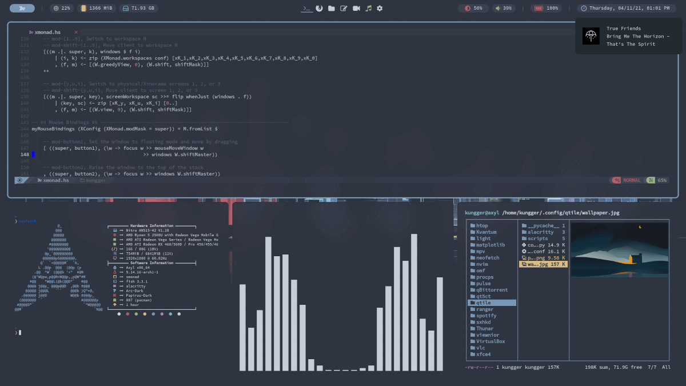

Welcome to Axyl.
Axyl is a Linux distro centered on tiling window managers.
Level up your productivity with i3, bspwm, dwm and more.

What is Axyl?
Features
Tiling Windows
Axyl focuses fully on tiling WMs, so we can give you
the best experience for advanced users.
Arch-Based
Built on top of Arch Linux, this distro gives you the latest
cutting-edge software, right now.
Minimal Base
Axyl follows the KISS principles, keeping the base system minimal yet flexible.
Window Managers
In Axyl, each window manager has its own colorscheme.
Choose one, or install as many as you want.
Choose one, or install as many as you want.
i3 default
The classic tiling window manager.
i3-gaps adds gaps between windows.
Everforest
bspwm
A tiling window manager that represents a full binary tree.
Dracula
XMonad
A dynamic window manager written and configured in Haskell.
Nord